Compute Sessions#
This document will cover how to query and create container-based compute sessions and utilize various web applications on the 'Sessions' page.
Start a new session#
After logging in with a user account, click Sessions on the left sidebar.
'Sessions' page lets you start new sessions or use and manage existing running sessions.
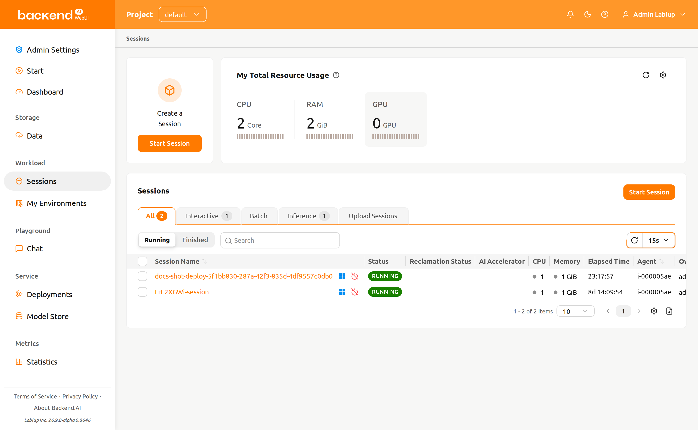
For how the list is organized and filtered, see Session List View.
Click the Start Session button to start a new compute session.
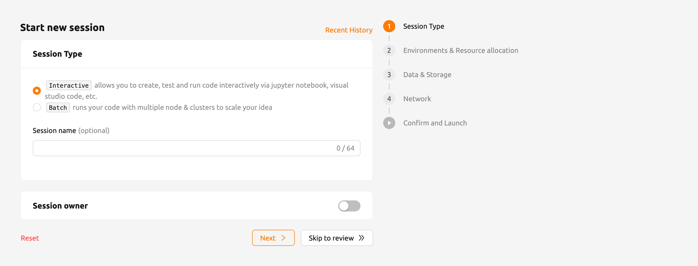
Session Type#
In the first page, users can select the type of session, 'interactive' or 'batch'. If needed, setting the name of the session (optional) is also available.
Session type: Determines the type of the session. There are two different types of session, "Interactive" and "Batch". The following are the primary distinctions between the two types:
Interactive compute session
- The compute session is used in a way that the user interacts with after creating a session without specifying a pre-defined execution script or command.
- The session is not terminated automatically unless user explicitly destroys the session or session garbage collectors are set by the admin.
Batch compute session
- Pre-define the script that will be executed when a compute session is ready.
- This session will execute the script as soon as the compute session is ready, and then automatically terminates the session as soon as the execution finishes. It will utilize the server farm's resources efficiently and flexibly if a user can write the execution script in advance or is building a pipeline of workloads.
- Users can set the start time of a batch-type compute session. However, keep in mind that this feature does not guarantee that the session will start at the registered time. It may still stay at 'PENDING' due to the lack of resources, etc. Rather, it guarantees that the session WILL NOT run until the start time.
- Users can also set the 'Timeout Duration' of a batch-type compute session. When users set the timeout duration, The session will automatically terminate if the specified time is exceeded.
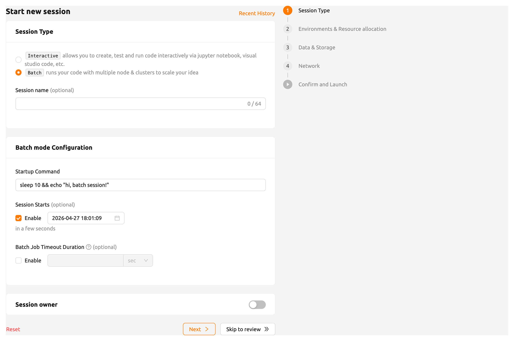
Figure 10.3
- Session name: Users can specify the name of the compute session to be created. If set, this name appears in Session Info, so it is distinguishable among multiple compute sessions. If not specified, random word will be assigned automatically. Session names only accept alphanumeric characters between 4 and 64 without spaces.
If users create a session with the superadmin account,
they can additionally assign a session owner. If you enable the toggle,
a user email field will appear.
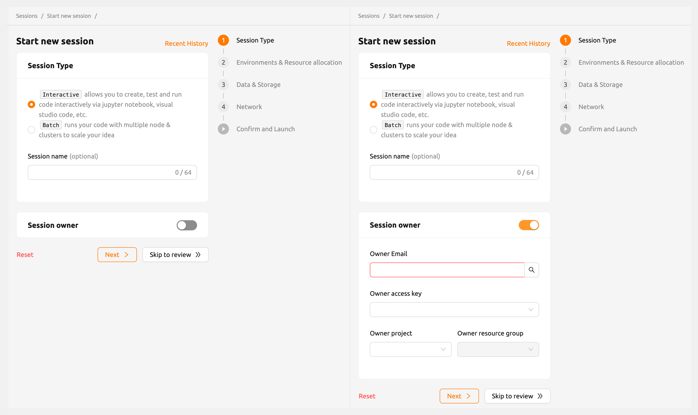
Enter the email of the user you want to assign the session to,
click the search button, and the user's access key will be automatically registered.
You can also select a project and resource group.
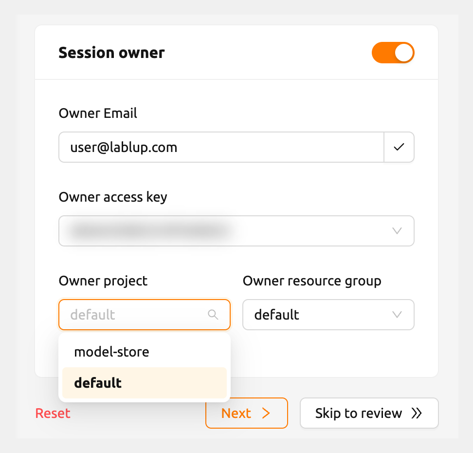
Environments & Resource Allocation#
Click the Next button below, or the Environments & Resource Allocation menu on the right
to proceed to the next page. If you want to create a session without any further
settings, press the Skip to review button. In this case, settings on the
other pages will all use the default values.
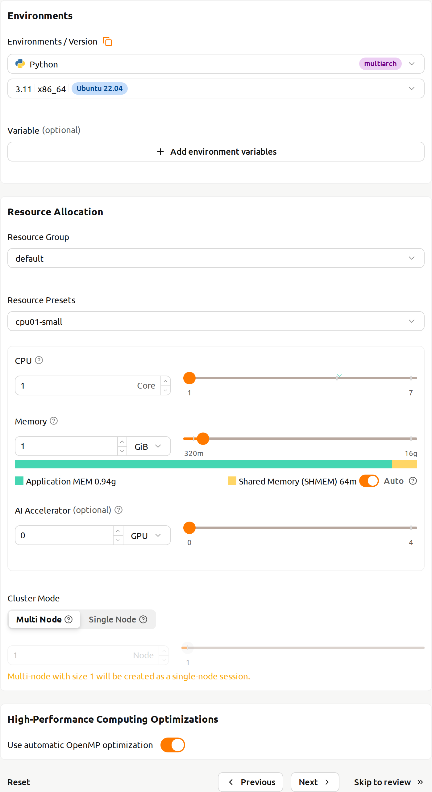
Environments#
For detailed explanations of each item that can be set on the second page, please refer to the following:
Environments: Users can select the base environment for compute sessions such as TensorFlow, PyTorch, C++, etc. The compute session will automatically included into the base environment library. If users choose another environment, the corresponding packages will be installed by default.
Version: Users can specify the version of the environment. There are multiple versions in a single environment. For example, TensorFlow has multiple versions such as 1.15, 2.3, etc.,
Image Name: Users can specify the name of the image to be used for the compute session. This configuration may not be available depending on the environment settings.
Set Environment Variable: To give more convenient workspace for users, Backend.AI supports environment variable setting in session launching. In this feature, users can add any envs such as
PATHby filling out variable name and value in environment configuration dialog.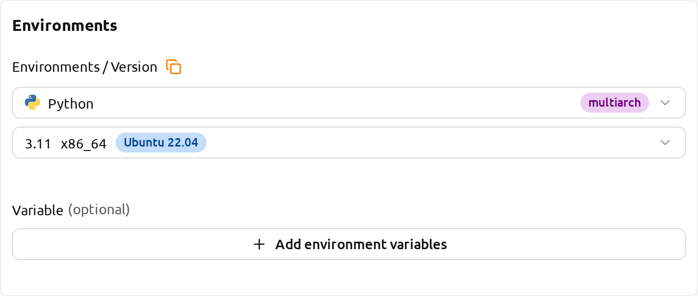
Figure 10.7
Resource Allocation#
Resource Group: Specifies the resource group in which to create a compute session. A resource group is a unit that groups host servers that each user can access. Usually, servers in a resource group would have the same type of GPU resources. Administrators can classify servers by any criteria, group them into one or more resource groups, configure which resource groups a user can use. Users can launch a compute session only on servers in resource groups allowed by the administrator. If multiple resource groups are allowed, users could select any group they want. However, it cannot be changed when system only allows single-setting.
Resource Presets: These templates have pre-defined resource sets, such as CPU, memory, and GPU, to be allocated to a compute session. Administrators can define frequently used resource settings in advance. By adjusting the numerical input or sliding the slider, users can allocate the desired amount of resources.

Figure 10.8 The meaning of each item is as follows. Clicking the
Help (?)button will also give more information.- CPU: The CPU performs basic arithmetic, logic, controlling, and input/output (I/O) operations specified by the instructions. In general, more CPUs are beneficial for high-performance computing workloads. But, to reflect the advantage of more CPUs, program code must be written to adapt multiple CPUs.
- Memory: Computer memory is a temporary storage area. It holds the data and instructions that the Central Processing Unit (CPU) needs. When using a GPU in a machine learning workload, at least twice the memory of the GPU to memory need to be allocated. Otherwise, GPU's idle time will increase, resulting penalty in a performance.
- Shared Memory: The amount of shared memory in GB to allocate for the compute session. Shared memory will use some part of the memory set in RAM. Therefore, it cannot be greater than the amount specified in RAM.
- AI Accelerator: AI accelerators (GPUs or NPUs) are well-suited for the
matrix/vector computations involved in machine learning. AI accelerators speed
up training / inference algorithms by orders of magnitude, reducing running
times from weeks to days.
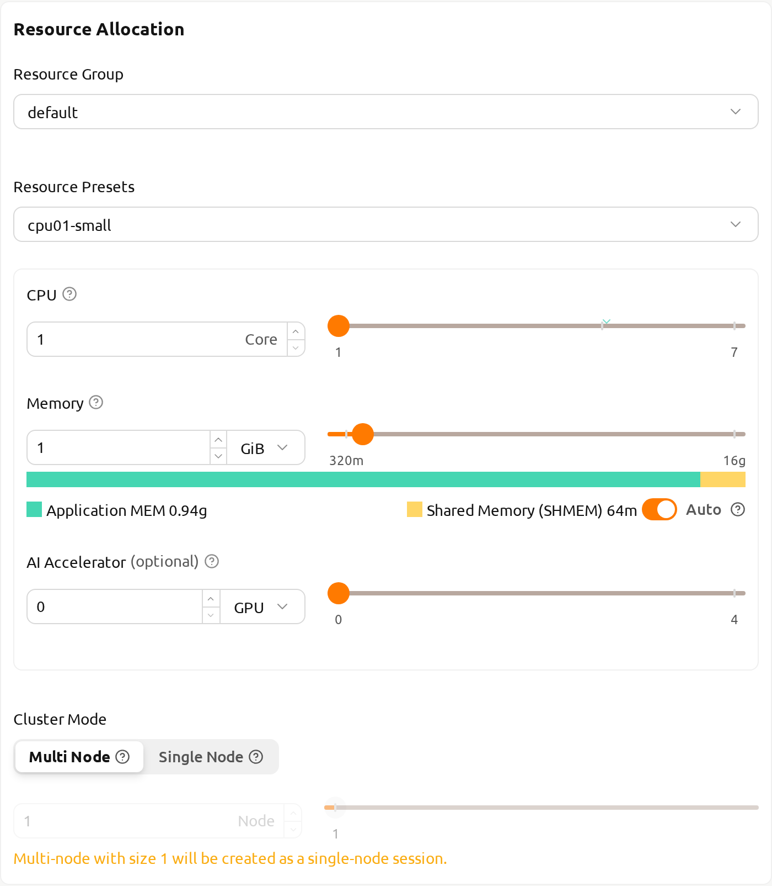
Figure 10.9
Some AI accelerators use unified memory — they do not have their own dedicated memory and share the host memory pool instead. When you select such an accelerator, a separate accelerator-memory amount cannot be set; the accelerator automatically draws from the host memory pool.
The Number of sessions option is no longer set in this form. To launch multiple sessions with the same configuration, use the start button's dropdown menu on the Confirm and Launch step. See Confirm and Launch for details.
Select Agent: Select the agent to be assigned. By default, the agent is automatically selected by the scheduler. The agent selector displays the actual amount of available resources for each agent. Currently, this feature is only supported in single-node, single-container environments.
Cluster Mode: Choose how a single compute session is laid out across agents. Single Node places the main node and all worker nodes on one agent (a physical node or virtual machine), while Multi Node splits one main node and one or more worker nodes across several agents. Hover the (
?) icon next to each option for a short description. After choosing a mode, set the Cluster Size with the slider or number input: in Single Node mode the size counts containers on one agent, and in Multi Node mode it counts nodes spread across agents. The remaining mark on the slider shows the largest size that can start immediately with the resources currently allocated — a larger size is allowed, but the session may stay pending until enough resources free up. A Multi Node session with a size of 1 is created as a Single Node session. For more information, refer to the Overview of Backend.AI cluster compute session.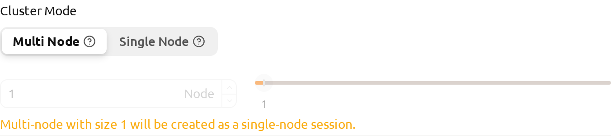
Figure 10.10
The Agent Select feature may not be available depending on the server environment.
High-Performance Computing Optimizations: Backend.AI provides configuring values related to HPC Optimizations.
Backend.AI provides configuration UI for internal control variable in
nthreads-var. Backend.AI sets this value equal to the number of session's CPU cores by default, which has the effect of accelerating typical high-performance computing workloads. Nevertheless, for some multi-thread workloads, multiple processes using OpenMP are used at same time, resulting in an abnormally large number of threads and significant performance degradation. To resolve this issue, setting the number of threads to 1 or 2 would work.
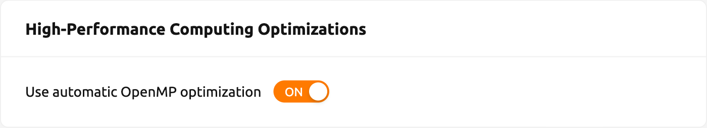
Data & Storage#
Click the Next button below, or the Data & Storage menu on the right to proceed to the next page.
When a compute session is destroyed, data deletion is set to default. However, data stored in the mounted folders will survive. Data in those folders can also be reused by mounting it when creating another compute session.
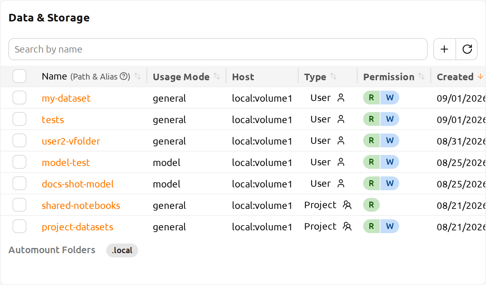
users can specify the storage folders to mount in the compute session. Folder explorer can be used by clicking folder name. For further information, please refer Explore Folder section.
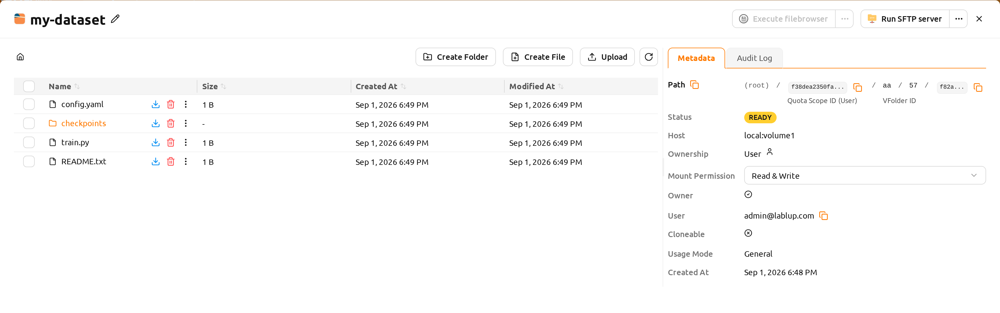
New folder can be created by clicking the + button next to the search box.
When new folder is created, it will automatically be selected as the folder to mount.
For further information, please refer Create Storage Folder section.
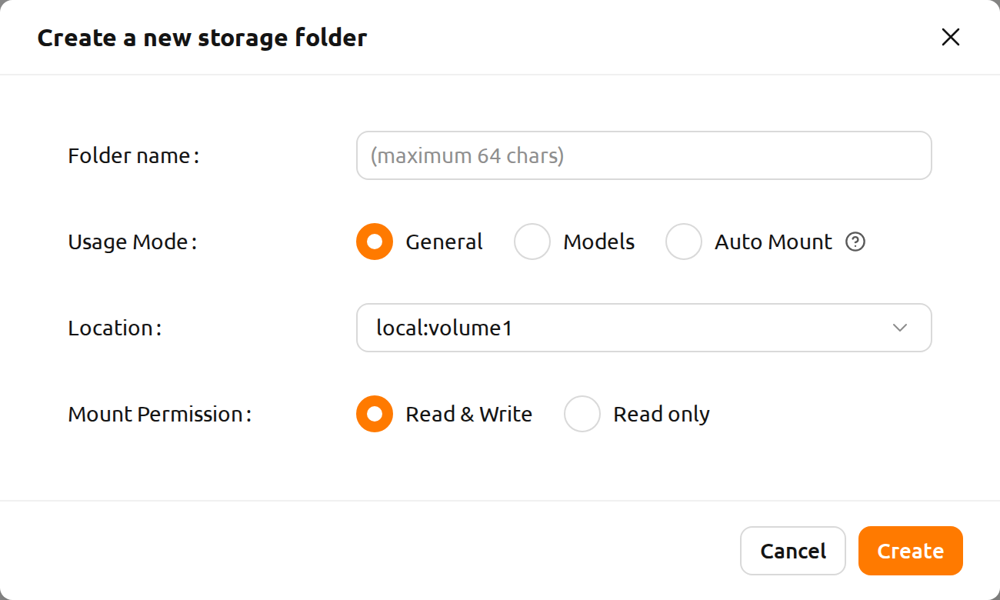
Network#
Click the Next button below, or the Network menu on the right to proceed to the next page.
On this page, Network configuration can be done such as Preopen Ports.
- Set Preopen Ports: Provides an interface for users to set preopen ports in a compute session. Refer to the How to add preopen ports before session creation for further information.

Confirm and Launch#
If you are done with the network setting, click the Next button below, or
Confirm and Launch button on the right to proceed to the last page.
On the last page, users could view information of session(s) to create,
such as environment itself, allocated resources, mount information,
environment variables set on the previous pages, preopen ports, etc.,
Review the settings, then click the Launch button to launch the session.
Click the Edit button located at the top right of each card to redirect to relevant page.
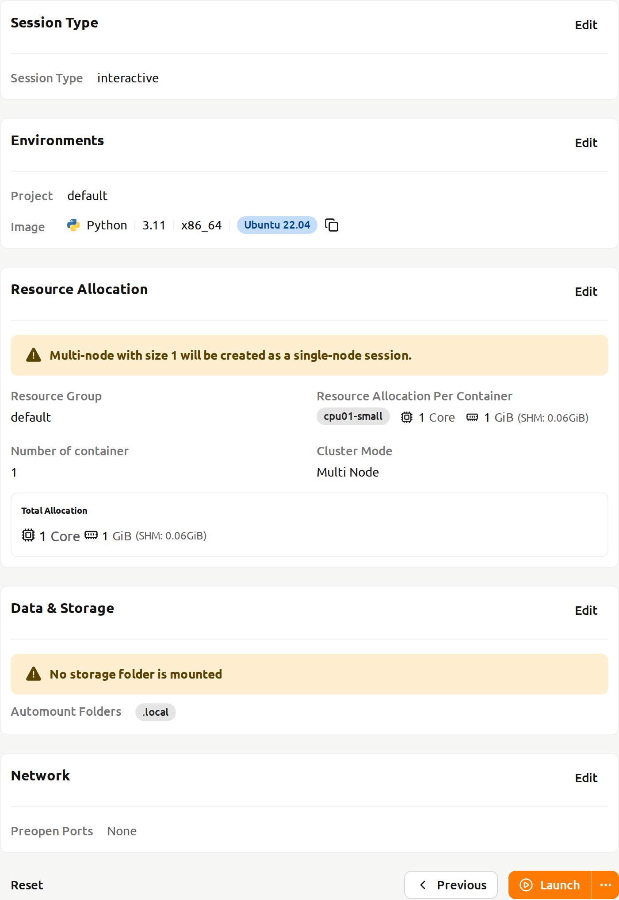
To launch more than one session at once with the same configuration, click the
more (...) icon next to the Launch button to open its dropdown menu and
select Launch Multiple Sessions. A dialog appears where you can set the
Number of sessions to create; each session is created independently with
the resources shown on the form. The single-click Launch action still starts
one session by default.
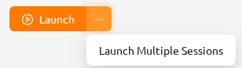
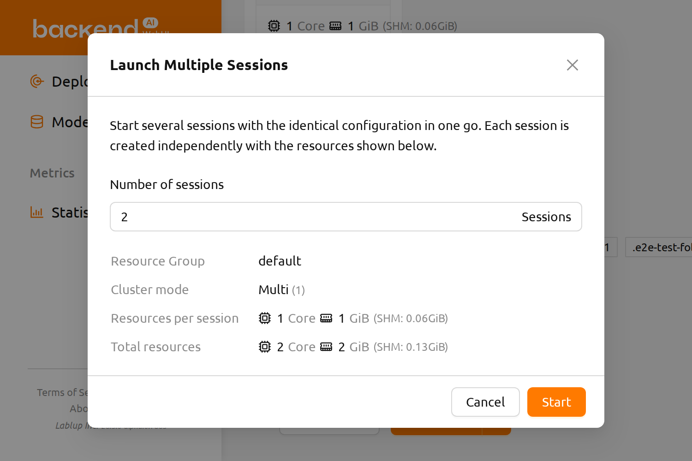
Concurrent session launch is capped by the system; if the requested total exceeds your remaining session quota, a warning is shown and some sessions may be queued until resources become available.
If there is an issue with the settings, an error message will be displayed as follows. Users can edit their settings when this happens.
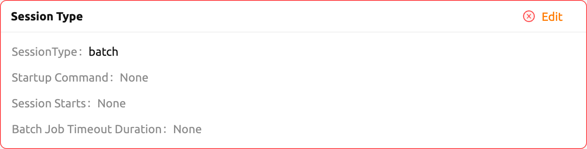
When you click the Launch button, a warning dialog appears stating that there are no mounted folders.
If folder mounting is not required, you can ignore the warning and click the Start button in the dialog to proceed.
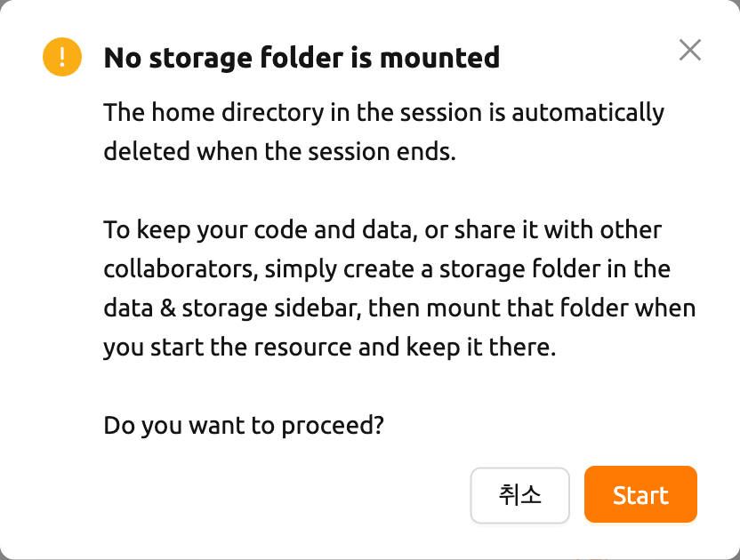
When a new compute session is added in the Running tab, a notification appears at the bottom-right corner of the screen. The bottom-left area of the notification displays the session status, while the bottom-right area includes buttons for opening the app dialog, launching the terminal, viewing container logs, and terminating the session. You can also view this session creation notification by clicking Notifications in the header.
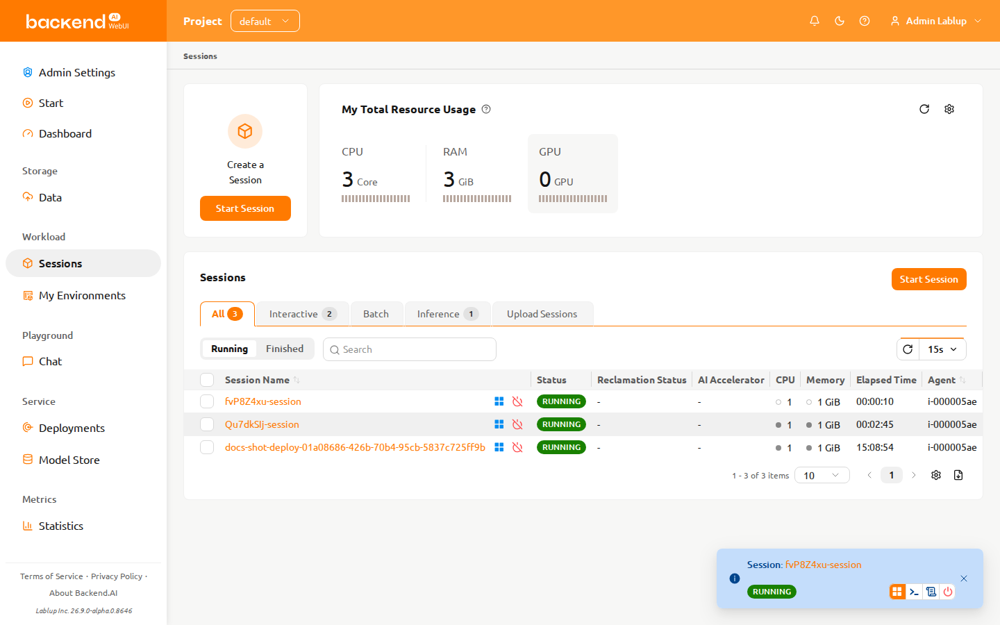
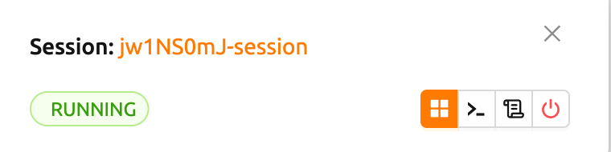
By clicking the app dialog button on the far left, you can view the available app services.

Recent History#
'Session Launcher' page provides a set of options for creating sessions. The
Recent History feature remembers information about previously created sessions.
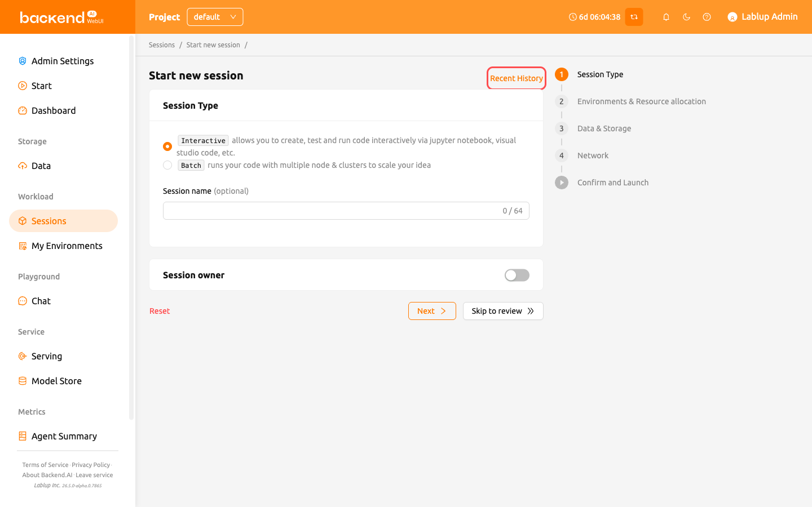
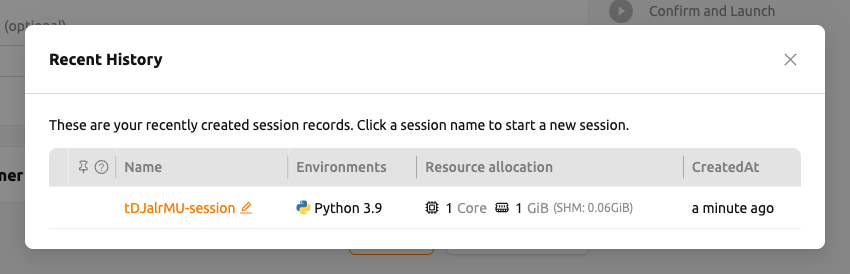
The Recent History modal stores information about the five most recently created sessions.
Clicking a session name takes you to the 'Confirm and Launch' page, which is the final step of session creation.
Each item can be renamed or pinned for easier access.
Superadmins can query all compute session information currently running (or terminated) in the cluster, and users can only view the sessions they have created.
Compute session list may not be displayed normally due to intermittent network connection problems, and etc. This can be solved by refreshing the browser.
Session List View#
The session list groups your sessions into type tabs — All, Interactive, Batch, Inference, and Upload Sessions — and each tab carries a Running / Finished switch and a property filter for Session Name, Resource Group, and Agent.
Resource grid view#
When the experimental Session resource grid view feature is enabled in User Settings, a View mode toggle appears above the list, next to the refresh button, and switches the list between Table and Grid. Refer to the Experimental features section for how to turn the feature on. The grid uses the same type tabs, Running / Finished switch, and property filter as the table, so you can narrow the list first and then switch the view mode.
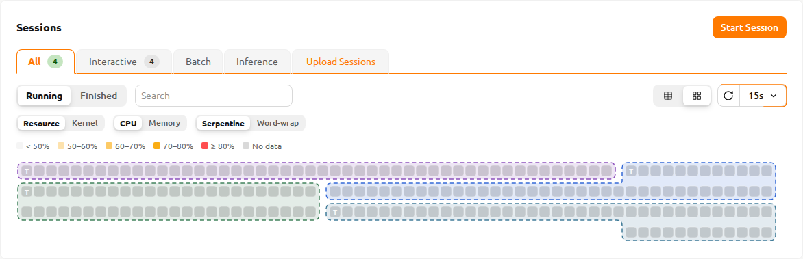
In the grid, each session is drawn as a plate of small cells whose color reflects the live utilization of the session: a neutral fill below 50%, progressively stronger warning colors between 50% and 80%, and a red fill at 80% or above. A session that reports no live data — one that is not running yet, for example — keeps the No data color, and a session whose resources are still only requested is drawn with a dashed outline. The legend above the grid explains each color.
Hover a plate to see a summary of that session: its status, type, cluster mode, resource group, image, start time and elapsed time, the utilization of each allocated resource, and its disk I/O. Click the plate to open the session detail panel.
The controls above the grid decide what a single cell stands for:
- Grid mode: Resource draws one cell per unit of a single selected resource, while Kernel draws one cell per kernel of the session.
- Resource (Resource mode only): The resource to visualize — CPU,
Memory, or any accelerator the listed sessions use. One cell is one CPU
core, one memory unit, or one accelerator device, and a fractional
accelerator share is drawn as a partially filled cell. Accelerators that
report device memory offer two entries, one for utilization (
util) and one for device memory (mem). - Memory unit (Resource mode, memory resources only): How much memory a single cell stands for — 1, 2, 4, or 8 GiB.
- Metric (Kernel mode only): The live statistic used to color the kernel cells. When none of the listed sessions reports live metrics, the selector is disabled and shows No live metrics.
- Layout: Serpentine runs every other row in the opposite direction, so the cells of a session that wraps stay connected; Word-wrap starts every row at the left edge instead.
Notices above the grid explain what the grid leaves out:
- When the current filter matches more sessions than the grid draws, only the first 100 sessions are shown and a notice reports the total.
- In Resource mode, sessions that hold none of the selected resource are hidden and a notice reports how many were hidden.
Session detail panel#
For detailed information on the session, click the session name in the session list. The session details panel shows the information of the session, such as the session ID, user ID, status, type, environments, mount information, resource allocation, reserved time, elapsed time, agent, cluster mode, resource usage including network I/O, and kernel information.
Click the Log button next to the Hostname in Kernels to view the logs of that kernel directly.
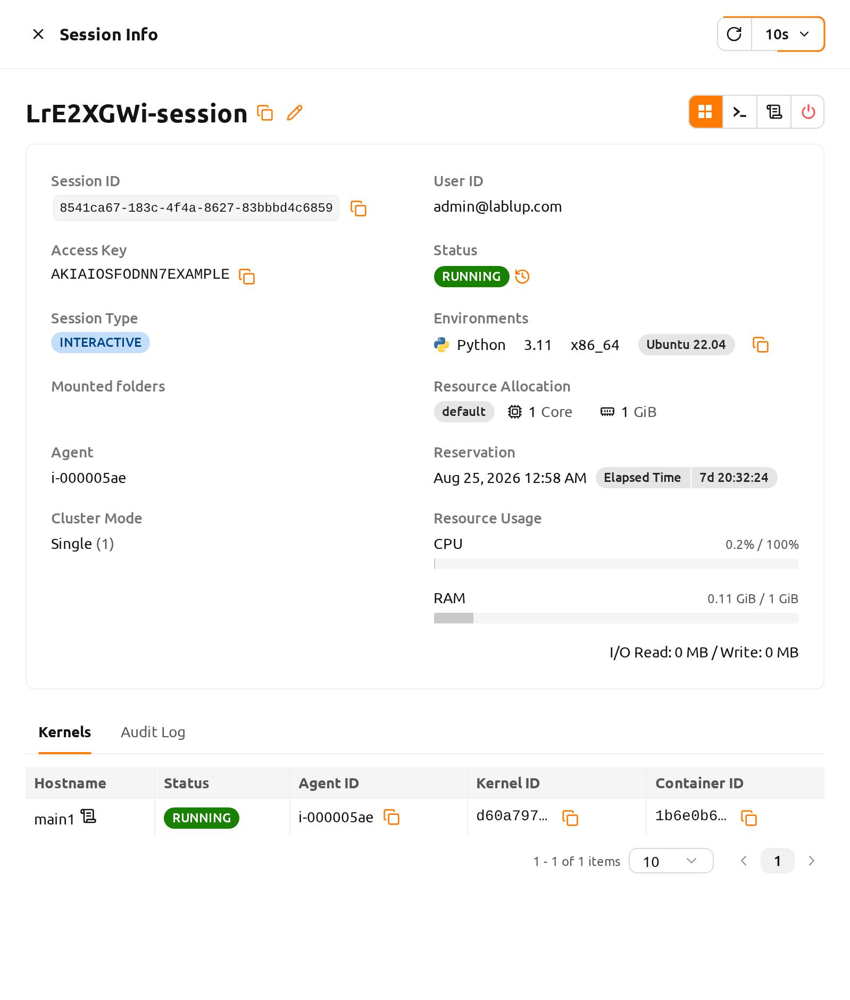
Backend.AI provides additional information for sessions in PENDING, TERMINATED, or CANCELLED states.
Click the Info button to check the details when available.
A clock icon button appears next to the session status tag in the session detail panel. Clicking this icon opens the Session Scheduling History modal, which provides a detailed log of all scheduling decisions the system made for the session. For more information, refer to the Session Scheduling History section.
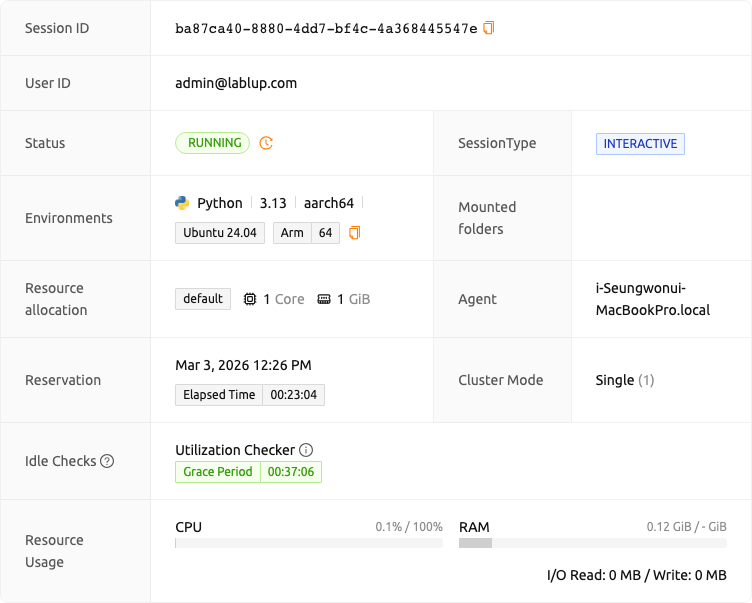
Session scheduling history#
The Session Scheduling History modal provides transparency into the internal scheduling lifecycle of a
compute session. It displays a detailed record of every scheduling phase the session went through,
including status transitions, results, retry attempts, and any errors encountered. This is particularly
useful for understanding why a session is delayed, stuck in PENDING, or has failed to start.
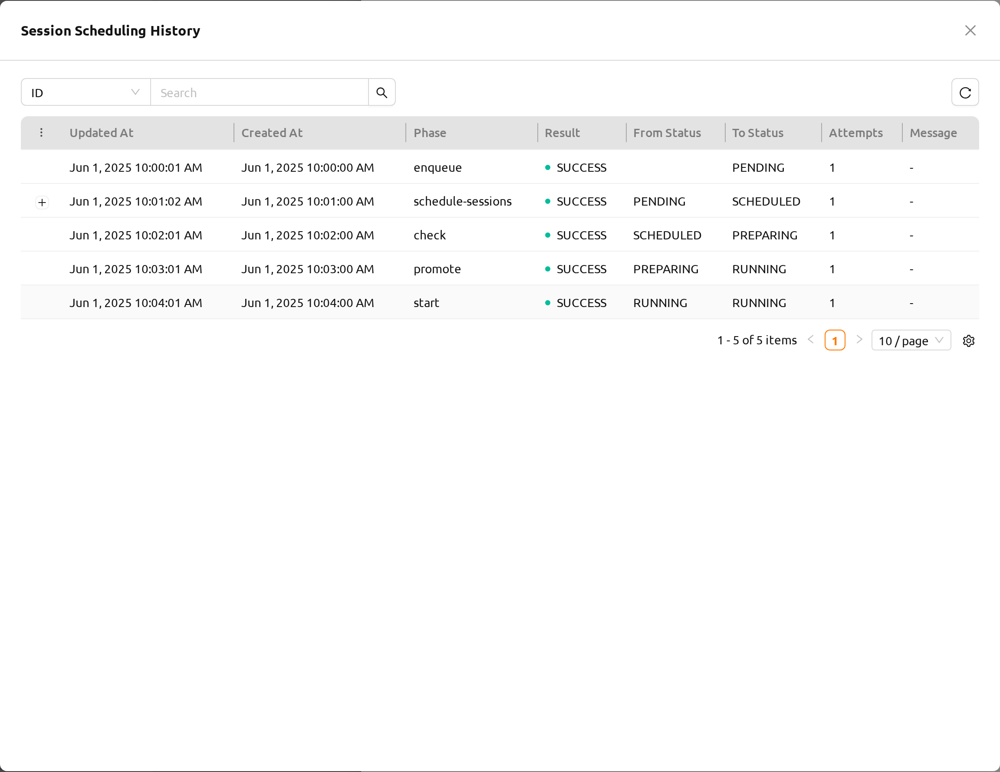
Filter bar#
At the top of the modal, a filter bar allows you to narrow down the scheduling history records. You can filter by the following properties:
- ID: Filter by history record ID (UUID, exact match)
- Phase: Filter by scheduling phase name
- Result: Filter by result type (SUCCESS, FAILURE, STALE, NEED_RETRY, EXPIRED, GIVE_UP, SKIPPED)
- From Status: Filter by the session status before the scheduling step
- To Status: Filter by the session status after the scheduling step
- Error Code: Filter by error code
- Message: Filter by message content
- Created At: Filter by the record creation time
- Updated At: Filter by the record update time
A refresh button is also available next to the filter bar to reload the scheduling history data.
History table#
The scheduling history table displays records with the following columns:
- Updated At: When this record was last updated
- Created At: When this record was created
- Phase: The name of the scheduling phase
- Result: The outcome of this scheduling step, shown as a color-coded badge
- From Status: The session status before this scheduling step
- To Status: The session status after this scheduling step
- Attempts: How many times this scheduling step was attempted
- Message: A summary message for this scheduling step
You can sort the table by the Created At or Updated At columns to view records in your preferred order.
History table pagination#
The scheduling history table is paginated with offset-based pagination. The default page size is 10 records per page. Changing a filter or the sort order automatically resets the view back to page 1.
Expandable sub-steps#
Some history records contain detailed sub-steps. When sub-steps are available, an expand arrow appears on the left side of the row. Click it to reveal a nested table showing the individual sub-steps of that scheduling phase.
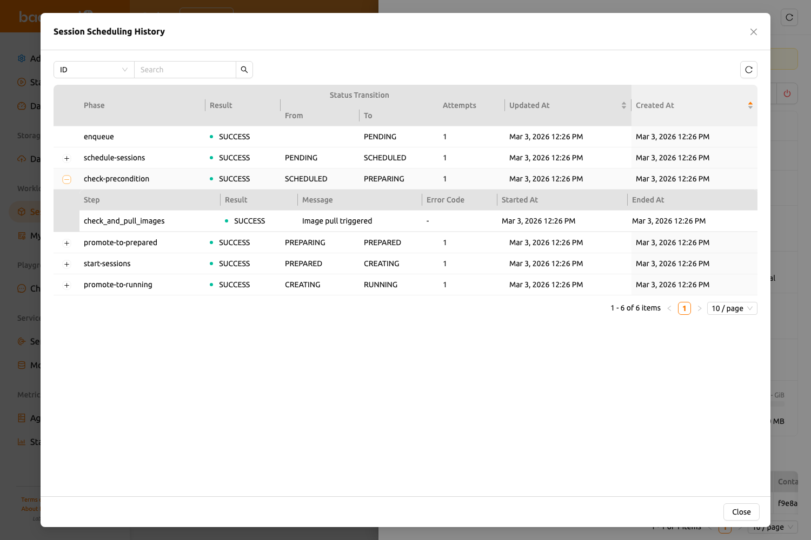
The sub-steps table includes the following columns:
- Step: The name of the sub-step
- Result: The outcome of the sub-step, shown as a color-coded badge
- Error Code: A specific error code if the step failed
- Message: Detailed information or error description
- Started At: When the sub-step began
- Ended At: When the sub-step completed
Result badge colors#
Each scheduling step and sub-step displays a color-coded result badge indicating its outcome:
| Result | Color | Meaning |
|---|---|---|
| SUCCESS | Green | The step completed successfully |
| FAILURE | Red | The step failed |
| STALE | Gray | The record is stale or outdated |
| NEED_RETRY | Yellow | The step needs to be retried |
| EXPIRED | Red | The scheduling attempt expired |
| GIVE_UP | Red | The system gave up on scheduling |
| SKIPPED | Gray | The step was skipped |
Session audit log#
The Audit Log tab appears at the bottom of the session detail panel alongside the Kernels tab. It provides a chronological record of every action taken on the session — such as status changes, resource modifications, and administrative operations — along with who triggered each action and when.
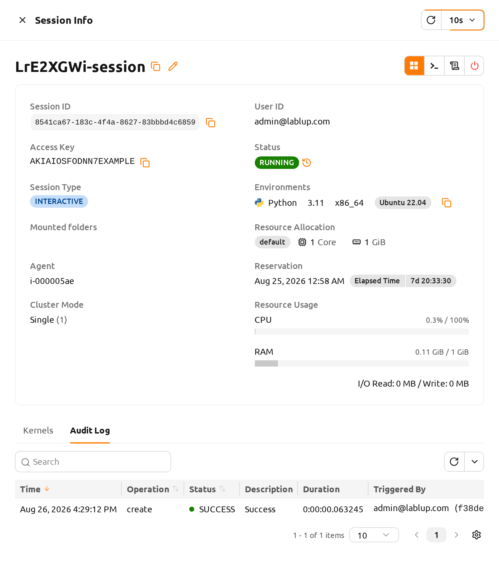
The Audit Log is enforced by the backend and may be visible only to superadmins. Regular users may see an empty result even when the tab is accessible.
Audit log columns#
The Audit Log table includes the following columns:
- Triggered By: The email address and account ID of the actor who initiated the action
- Operation: The type of action performed (for example, session creation, termination, or resource change)
- Status: The outcome of the action (
SUCCESS,ERROR,RUNNING, orUNKNOWN) - Time: When the action occurred
Audit log filters#
Use the filter bar above the table to narrow down the log entries:
- Status: Filter by action outcome (
SUCCESS,ERROR,RUNNING,UNKNOWN) - Operation: Search by operation name or keyword
- Triggered By: Search by actor ID
- Time: Filter by a date-range picker
A Refresh button reloads the log. The audit log query is deferred and sent only the first time you activate the Audit Log tab.
Use Jupyter Notebook#
Let's look at how to use and manage an already running compute session. Click the first icon in the upper-right corner of the session detail panel to open the app launcher, which shows the app services available for that session.
There are two check options under the app icons. Opening the app with each item checked applies the following features, respectively:
- Open app to public: Open the app to the public. Basically, web services such as Terminal and Jupyter Notebook services are not accessible by other users, even if the user knows the service URL, since they are considered unauthenticated. However, checking this option makes it possible for anyone who knows the service URL (and port number) to access and use it. Of course, the user must have a network path to access the service.
- Try preferred port: Without this option checked, a port number for the web service is randomly assigned from the port pool prepared in advance by Backend.AI. If you check this item and enter a specific port number, the entered port number will be tried first. However, there is no guarantee that the desired port will always be assigned because the port may not exist at all in the port pool or another service may already be using the port. In this case, the port number is randomly assigned.
Depending on the system configuration, these options may not be shown.
Let's click on Jupyter Notebook.

Pop up windows will show that Jupyter Notebook is running. This notebook was created inside a running compute session and can be used easily with the click of a button. Also, there is no need for a separate package installation process because the language environment and library provided by the computation session can be used as it is. For detailed instructions on how to use Jupyter Notebook, please refer to the official Jupyter Notebook documentation.
id_container file in the notebook's file explorer, contains a private
SSH key. If necessary, users can download it and use it for SSH / SFTP access to
the container.
Click the NEW button at the top right and select the Notebook for Backend.AI,
then the ipynb window appears where users can enter their own code.

In this window, users can enter and execute any code that they want by using the environment that session provides. The code is executed on one of the Backend.AI nodes where the compute session is actually created and there is no need to configure a separate environment on the local machine.
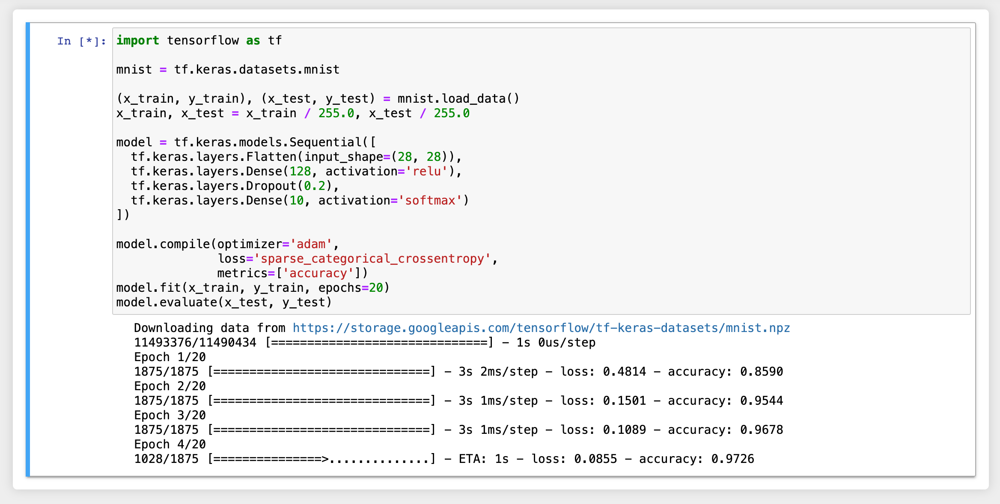
When window is closed, Untitled.ipynb file can be founded in the notebook file explorer.
Note that the files created here are deleted when session is terminated. The way to preserve those files even
after the session is terminated is described in the Data & Storage Folders section.

Use web terminal#
This section will explain how to use the web terminal. Click the
terminal icon(second button) to use the container's ttyd app. A terminal will appear in a new window
and users can run shell commands to access the computational session as shown in the following figure.
If familiar with the commands, users can easily run various Linux commands. Untitled.ipynb file
can be found in Jupyter Notebook, which is listed with the ls command. This shows that both apps
are running in the same container environment.

Files created here can also be immediately seen in the Jupyter Notebook as well. Conversely, changes made to files in Jupyter Notebook can also be checked right from the terminal. This is because they are using the same files in the same compute session.
In addition to this, users can use web-based services such as TensorBoard, Jupyter Lab, etc., depending on the type of environments provided by the compute session.
Query compute session log#
Users can view the log of the compute session by clicking the See Container Logs
icon in the session detail panel.
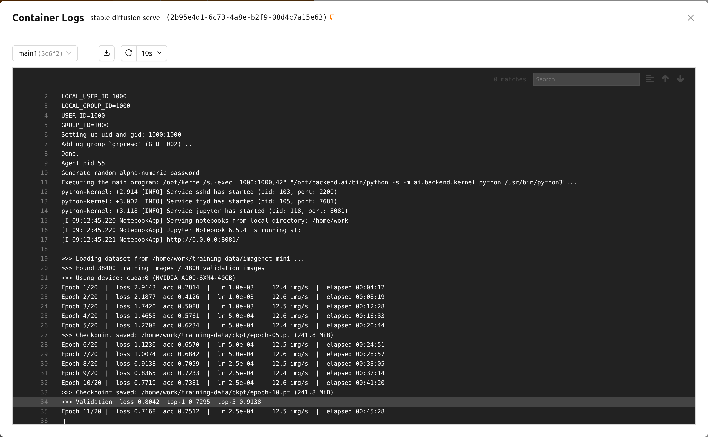
The log window provides the following controls above the log view:
- Kernel selector: Choose which kernel of the session to read. For a single-container session there is only one entry; for a cluster session, each container is listed by its hostname with the first characters of its ID.
- Download: Save the currently displayed log to a text file.
You can also search within the displayed log using the search box built into the log view.
Rename running session#
Name of the active session can be changed. Click the Edit button in the session detail
panel to change the session name.
New session name should also follow the the authoring rule.
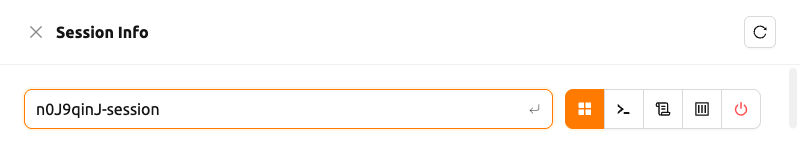
Delete a compute session#
To terminate a specific session, simply click on the red power button and click
Terminate button in the dialog. Since the data in the folder inside the compute
session is deleted as soon as the compute session ends, it is recommended to
move the data to the mounted folder or upload it to the mounted folder from the
beginning.
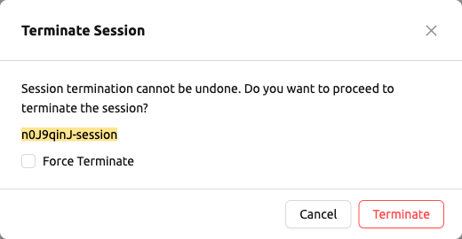
Idleness checks#
Backend.AI supports three types of inactivity (idleness) criteria for automatic garbage collection of compute sessions: Max Session Lifetime, Network Idle Timeout, and Utilization Checker.
The criteria that apply to a running session are shown in the Reclamation Status row of the session detail panel, together with the time remaining before each one would terminate the session. The row appears while the session is running and at least one of its idle checks has a countdown, whether that countdown still has days to go or only minutes.
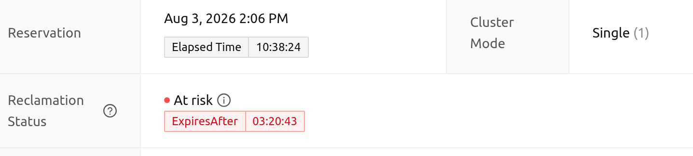
The meaning of idle checkers are as follows. Click the question-mark (?) icon
next to the Reclamation Status label to open a dialog with the full
explanation of each one.
Max Session Lifetime: Force-terminate sessions after this time from creation. This measure prevents sessions from running indefinitely.
Network Idle Timeout: Force-terminate sessions that do not exchange data with the user (browser or web app) after this time. Traffic between the user and the compute session continuously occurs when the user interacts with an app, like terminal or Jupyter, by keyboard input, Jupyter cell creation, etc. Jupyter cell creation, etc. If there is no interaction for a certain period, the condition of garbage collection will be met. Even if there is a process executing a job in the compute session, it is subject to termination if there is no user interaction.
Utilization Checker: Resources allocated to a compute session are reclaimed based on the utilization of those resources. The decision to delete is based on the following two factors:
- Grace Period: The time during which the utilization idle checker is inactive. Even with low usage, the compute session won't be terminated during this period. However, once the grace period is over, if the average utilization remain below the threshold during the set idle timeout period, the system can terminate the session at any time. The grace period is merely a guaranteed duration during which termination does not occur. This measure is primarily for efficient management of low-usage GPU resources.
- Utilization Threshold: If the resource utilization of a compute session does not exceed the set threshold for a certain duration (idle timeout), that session will be automatically terminated. For example, if the accelerator utilization threshold is set to 1%, and a compute session shows a utilization of less than 1% over the idle timeout, it becomes a target for termination. Resources with empty values are excluded from the garbage collection criteria.
After the grace period, sessions can be terminated anytime if utilization remains low. Briefly using the resources does not extend the grace period. Only the average utilization over the last idle timeout is considered.
Depending on the environment settings, the idle checkers that apply and the resource types listed for the utilization checker may be different.
Reclamation Status#
The session list includes a Reclamation Status column that tells you at a glance how close each session is to being reclaimed by the utilization checker. The same badge replaces the plain label of the utilization entry in the Reclamation Status row of the session detail panel.
The badge has three levels, described in the popover legend as:
- Safe: The current average utilization is comfortably above the threshold.
- Warning: The current average is above the threshold, but close to it.
- At risk: The current average is below the threshold.
The badge changes level before the average actually falls below the threshold, so a session can show At risk while its current average is still above the configured value. Treat it as an early warning that leaves you time to react, not as a report that the threshold has already been crossed.
Sessions that the utilization checker does not apply to, and sessions for which
no measurement is available yet, show - in the column. In the session detail
panel, an entry whose first reclamation decision has not been made yet reads
Checking reclamation status in place of the remaining-time tag.
Hover the information (i) icon next to the badge to open a popover with the details behind the level:
- The condition sentence, which states whether resources are reclaimed when any of the listed conditions stays at the at-risk level or only when all of them do. Which sentence appears depends on how your administrator configured the checker.
- One row per measured resource, each with its own level badge and the current
average against the configured threshold, in the form
(current 12% | threshold 5%). - A legend describing the criterion for each of the three levels.
Resources without a measurement are listed with a dash and do not affect the overall level.
As the countdown on the utilization entry gets short, the remaining-time tag next to it takes on the same color as the badge, so a countdown shown in red belongs to a session about to be reclaimed. While there is still plenty of time left, the tag stays plain even if the badge already shows a risk level.
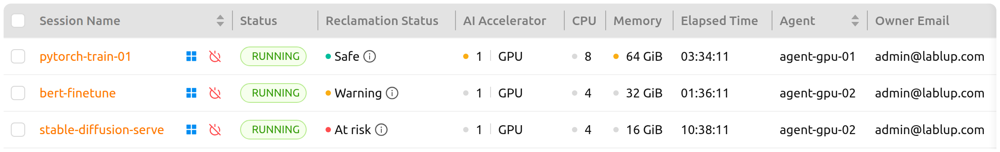
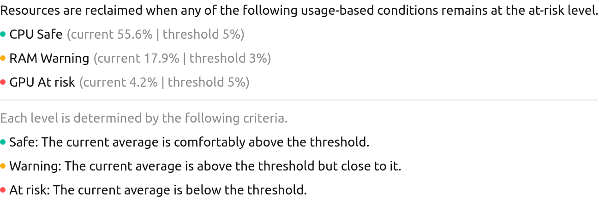
How to add environment variable before creating a session#
To give more convenient workspace for users, Backend.AI supports environment variable setting
in session launching. In this feature, users can add any envs such as PATH by filling out
variable name and value in environment configuration dialog.
To add environment variable, simply click + Add environment variables button of the Variable.
Also, you can remove the variable by clicking - button of the row that you want to get rid of.

You can write down variable name and value in the same line of the input fields.
How to add preopen ports before creating a session#
Backend.AI supports preopen ports setting at container startup. When using this feature, there is no need to build separate images when you want to expose the serving port.
To add preopen ports, simply enter multiple values separated by either a comma (,) or a space.
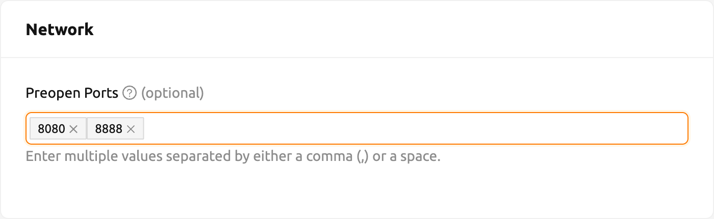
On the fourth page of the session creation page, users can add, update and delete written preopen ports. To see more detailed
information, please click the Help (?) button.
Users can put port numbers in between 1024 ~ 65535, to the input fields. Then, press Enter. Users can specify multiple ports, separated by commas (,).
Users can check the configured preopen ports in the session app launcher.
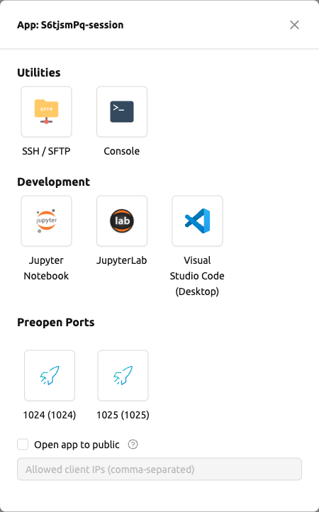
The preopen ports are the internal ports within the container. Therefore, unlike other apps, when users click the preopen ports in the session app launcher, a blank page will appear. Please bind a server to the respective port before use.
Save session commit#
Backend.AI supports the "Convert Session to Image" feature. Committing a RUNNING session will save the
current state of the session as a new image. Click the Commit button (the fourth icon) in the session detail panel
to open a dialog displaying the session information. After entering the session name, users can convert the session to
a new image. The session name must be 4 to 32 characters long and can only contain alphanumeric letters, hyphens (-),
or underscores (_).
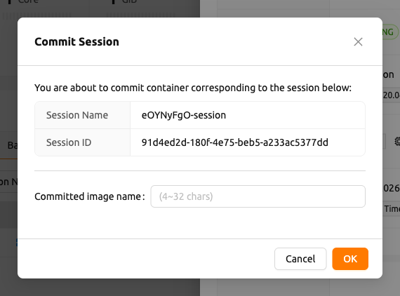
After filling out session name in the input field, click the PUSH SESSION TO CUSTOMIZED IMAGE button.
The customized image created in this way can be used in future session creations. However, directories
mounted to the container for image commits are considered external resources and are not included in
the final image. Remember that /home/work is a mount folder (scratch directory), so it is not included.
Currently, Backend.AI supports "Convert Session to Image" only when the session is in INTERACTIVE mode.
To prevent unexpected error, users may not be able to terminate the session during committing process.
To stop the ongoing process, check the session, and force-terminate it.
The number of times to "Convert Session to Image" may be limited by the user resource policy. In this case, remove the existing customized image and try again. If this does not resolves the problem, please contact the administrator.
Utilizing converted images of ongoing sessions#
Converting an ongoing session into an image allows users to select this image from the environments in the session launcher
when creating a new session. This image is not exposed to other users and is useful for continuing to use the current session
state as is. The converted image is tagged with Customized<session name>.

To manually enter the environment name for future session creation, please click the copy icon.

Advanced web terminal usage#
The web-based terminal internally embeds a utility called tmux. tmux is a terminal multiplexer that supports to open multiple shell windows within a single shell, so as to allow multiple programs to run in foreground simultaneously. If users want to take advantage of more powerful tmux features, they can refer to the official tmux documentation and other usage examples on the Internet.
Here we are introducing some simple but useful features.
Copy terminal contents#
tmux offers a number of useful features, but it's a bit confusing for first-time
users. In particular, tmux has its own clipboard buffer, so when copying the
contents of the terminal, users can suffer from the fact that it can be pasted
only within tmux by default. Furthermore, it is difficult to expose user
system's clipboard to tmux inside web browser, so the terminal
contents cannot be copied and pasted to other programs of user's computer. The
so-called Ctrl-C / Ctrl-V is not working with tmux.
If copy and paste of terminal contents is needed to system's clipboard,
users can temporarily turn off tmux's mouse support. First, press Ctrl-B key
to enter tmux control mode. Then type :set -g mouse off and press Enter
(note to type the first colon as well). Users can check what they are
typing in the status bar at the bottom of the screen. Then drag the desired text
from the terminal with the mouse and press the Ctrl-C or Cmd-C (in Mac)
to copy them to the clipboard of the user's computer.
With mouse support turned off, scrolling through the mouse wheel is not supprted, to see
the contents of the previous page from the terminal. In this case, users can turn
on mouse support. Press Ctrl-B, and this time, type :set -g mouse on. Now scrolling through mouse wheelis available to see the contents of the previous page.
If you remember :set -g mouse off or :set -g mouse on after Ctrl-B,
you can use the web terminal more conveniently.
Ctrl-B is tmux's default control mode key. If users set another control key
by modifying .tmux.conf in user home directory, they should press the set
key combination instead of Ctrl-B.
In the Windows environment, refer to the following shortcuts.
- Copy: Hold down
Shift, right-click and drag - Paste: Press
Ctrl-Shift-V
Check the terminal history using keyboard#
There is also a way to copy the terminal contents and check the previous
contents of the terminal simultaneously. It is to check the previous contents
using the keyboard. Again, click Ctrl-B first, and then press the Page Up and/or Page Down keys. To exit search mode, just press the q
key. With this method, users can check the contents of the terminal history even
when the mouse support is turned off.
Spawn multiple shells#
The main advantage of tmux is to launch and use multiple shells in one
terminal window. Pressing Ctrl-B key and c. will show the new shell environment.
Previous window is not visible at this point, but is not terminated.
Press Ctrl-B and w. List of shells currently open on tmux is shown.
Shell starting with 0: is the initial shell environment, and the shell
starting with 1: is the one just created. Users can move between shells
using the up/down keys. Place the cursor on the shell 0: and press the Enter
key to select it.

In this way, users can use multiple shell environments within a web terminal. To exit or terminate the
current shell, just enter exit command or press Ctrl-B x key and then
type y.
In summary:
Ctrl-B c: create a new tmux shellCtrl-B w: query current tmux shells and move around among themexitorCtrl-B x: terminate the current shell
Combining the above commands allows users to perform various tasks simultaneously on multiple shells.